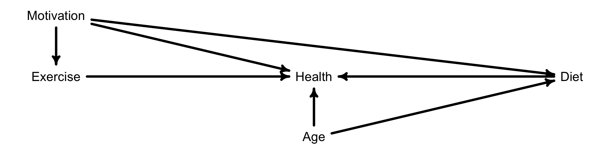
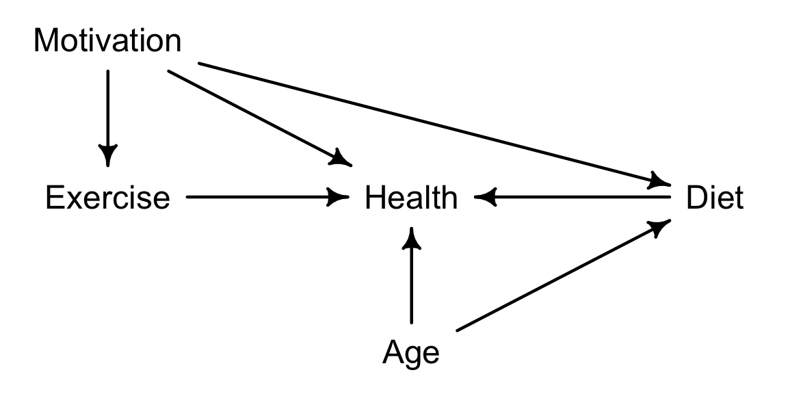
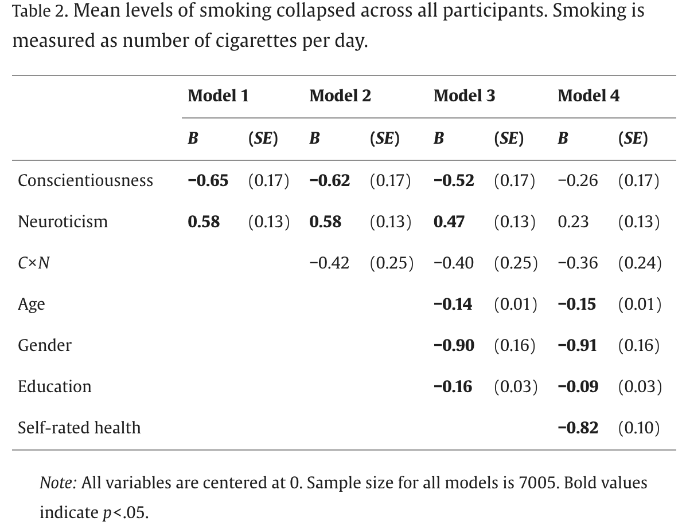

Week 3: Causes, Confounds, and Colliders
Good and bad controls

finding backdoor paths
Start at treatment (X)
Look for any arrows coming INTO X
Follow all possible paths to outcome (Y)
A valid adjustment set blocks all backdoor paths
But be careful not to control for colliders!
exercise
Go to dagitty.net and create this DAG:
exercise

- List all paths between Exercise and Health
- Identify which paths are backdoor paths
- Find all valid adjustment sets if we want to estimate the effect of Exercise on Health
- BONUS: What happens if we control for Motivation? Why?
Paths:
Exercise → Health (direct/front-door) Exercise ← Motivation → Health (backdoor) Exercise ← Motivation → Diet ← Age → Health (backdoor)
Valid adjustment sets:
- Motivation
- Motivation, Age
exercise: simulate simple confounding
Copy this code from the slides or the class book (Simulation 1: Simple Confounding).
Run the base simulation and observe results
Modify the simulation parameters:
- Change the strength of the confounding (modify the 0.5, 0.8, and 0.6 coefficients)
- Change the sample size (N)
- Add a true causal effect (modify Y calculation to include X)
- Answer these questions:
- What happens to the bias in the naive estimate as you increase the strength of confounding?
- How does sample size affect the precision of your estimates?
- When does controlling for Z fail to recover the true causal effect?
Code
#number of sims
N = 1000
# Generate data
U <- rnorm(N) # Unobserved confounder
X <- rnorm(N, mean = 0.5 * U) # Treatment affected by U
Y <- rnorm(N, mean = 0.8 * U) # Outcome affected by U
Z <- rnorm(N, mean = 0.6 * U) # Observed variable that captures U
d <- data.frame(X, Y, Z)
# Fit models
flist1 <- alist(
Y ~ dnorm(mu, sigma),
mu <- a + bX*X,
a ~ dnorm(0, .5),
bX ~ dnorm(0, .25),
sigma ~ dexp(1)
)
m32.1 <- quap(flist1, d)
precis(m32.1)
# Fit models
flist2 <- alist(
Y ~ dnorm(mu, sigma),
mu <- a + bX*X +bZ*Z,
a ~ dnorm(0, .5),
bX ~ dnorm(0, .25),
bZ ~ dnorm(0, .25),
sigma ~ dexp(1)
)
m32.2 <- quap(flist2, d)
precis(m32.2)
post.1 <- extract.samples(m32.1)
post.2 <- extract.samples(m32.2)
results_df = data.frame(naive = post.1$bX,
adjusted = post.2$bX)
results_df %>%
pivot_longer(everything()) %>%
ggplot(aes(x = value, fill = name)) +
geom_density(alpha = .5) +
geom_vline(aes(xintercept = 0), linetype = "dashed")bad controls
“Bad controls” can create bias in three main ways:
- Collider bias (as we saw in the previous exercise)
- Precision parasites (reduce precision without addressing confounding)
- Bias amplification (making existing bias worse)
Warning signs of bad controls:
- Post-treatment variables
- Variables affected by both treatment and outcome
- Variables that don’t address actual confounding paths
exercise
Use this code to simulate new variables:
n = 100
# Z affects X but is not a confounder
Z <- rnorm(n)
X <- rnorm(n, mean = Z)
Y <- rnorm(n, mean = X) # True effect of X on Y is 1Using different sample sizes (n = 50, 100, 1000), test two models exploring the relationship between X (exposure) and Y (outcome). For each sample size, compare:
- Standard errors without controlling for Z
- Standard errors when controlling for Z
How does sample size affect the impact of the precision parasite (Z)? Under what conditions is the precision loss most severe?
exercise
Use this code to simulate new variables:
n = 100
conf_strength = 1
# U is unmeasured confounder
U <- rnorm(n)
Z <- rnorm(n)
X <- rnorm(n, mean = Z + conf_strength * U)
Y <- rnorm(n, mean = conf_strength * U) # No true effect of XUsing different confounder strengths (0.5, 1, 2), test two models exploring the relationship between X (exposure) and Y (outcome). For each sample size, compare:
- Standard errors without controlling for Z
- Standard errors when controlling for Z
Questions: * What happens to the bias when you control for Z? * How does the strength of the confounding affect the amount of bias amplification? * Can you explain why this happens using the DAG?
exercise
Use the simulation code provided in the last two exercises to create a new scenario with both a precision parasite variable (Z1) and a bias amplification variable (Z2).
Questions:
What happens to our estimates when we control for both variables?
Is it better to:
- Control for neither
- Control for just one (which one?)
- Control for both
How can we use DAGs to decide which controls to include?
table 2 fallacy
The table 2 fallacy, first described by Westreich and Greenland in 2013, refers to a common misinterpretation in epidemiology and statistics when researchers present multiple adjusted effect estimates in a single table (often “Table 2” in academic papers).
The fallacy occurs when researchers interpret all coefficients in a multiple regression model as total effects, when in fact some are direct effects conditional on the other variables in the model. This can lead to incorrect causal interpretations, particularly when some variables are mediators (lying on the causal pathway between exposure and outcome).
For example, imagine studying how education affects income, with job type as a mediator:
- Education → Job Type → Income
- Education also directly affects Income
If you include both education and job type in the same regression model, the coefficient for education represents only its direct effect on income (not mediated through job type), not its total effect. However, researchers often mistakenly interpret it as the total effect.
This fallacy becomes particularly problematic when: 1. The research question involves understanding total causal effects 2. There are multiple pathways between variables 3. Some variables act as both confounders and mediators
To avoid this fallacy, researchers should: - Clearly specify which effects (total vs direct) they’re interested in - Use appropriate methods like path analysis or mediation analysis when studying causal relationships - Be precise in their interpretation of regression coefficients - Consider creating separate models for different research questions
As you know, the covariates in a statistical analysis can have a variety of different roles from a causal inference perspective: they can be mediators, confounders, proxy confounders, or competing exposures. If a suitable set of covariates can be identified that removes confounding, we may proceed to estimate our causal effect using a multivariable regression model. In linear regression models, there are only two types of variables: the dependent variable (DV) and independent variables (IVs, or predictors). No further distinction is made between the IVs – specifically, the exposure is by no means a “special” IV and is treated just like any other IV. Thus, as you can see, there is a conceptual mismatch between causal theory (DAG) that leads us to formulate a multivariable regression model (that highlights the exposure-outcome relationship and associated statistical adjustment for confounding) and the regression model itself. This conceptual mismatch can easily lead to misinterpretation of the results from a multivariable regression model.
One particularly widespread misconception is known as mutual adjustment, recently called the Table 2 fallacy since the first table in most epidemiological articles usually describes the study data, and the second table reports the results of a multivariable regression model where the erroneous efforts to illustrate mutual adjustment often appear. To illustrate the fallacy, let us assume that we estimate the effect of X on Y. We know (e.g. from a DAG) that there is only one confounder, Z, so we run the regression Y~X+Z. If our background knowledge and the statistical assumptions of the regression (e.g. normality) hold, then the coefficient of X estimates the causal effect of X on Y. The ‘Table 2 fallacy’ is the belief that we can also interpret the coefficient of Z as the effect of Z on Y; indeed, in larger models, the fallacy is the belief that all coefficients have a similar interpretation with respect to Y.
exercise
Visit https://dagitty.net/learn/graphs/table2-fallacy.html) and scroll down to the first Test Your Knowledge section. Try this exercise as many times as you need to get the correct answer twice in a row.
exercise

Draw out the DAG model for this research question using dagitty.net. (You can model “personality” instead of C, N, and their interaction.)
Assuming there are no unobserved confounds, which of these coefficients are total effects and which are direct effects?
If personality is the primary exposure variable, are there any covariates in here that should not be included?
Are there any unobserved confounds?